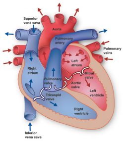

Heart is divided into four chambers. You have two chambers on the top (atrium, plural atria) and two on the bottom (ventricles), one on each side of the heart. Right atrium: Two large veins deliver oxygen-poor blood to your right atrium. The superior vena cava carries blood from your upper body.
